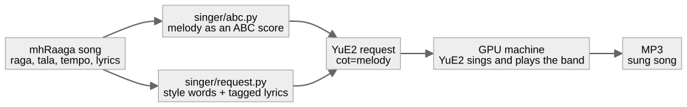

The singer layer (YuE2)
mhRaaga's own voice speaks the words. A real sung vocal needs a singing model. The open YuE2 model (vendored in third_party/YuE) can sing lyrics in a style over a band. The singer layer connects it to mhRaaga so the model sings our raga melody instead of inventing a tune.
Status, plainly: the layer is built and tested, and its output passes YuE2's own score check. No song has been sung yet, because the model needs a GPU and this project has none. Nothing paid has been started.
How it fits

| File | What it does |
|---|---|
tool_layer_mhraga/singer/abc.py |
Writes the song's gat melody as ABC: two voices (Vocal and Ins), 4/4, sixteenth grid, Sa on G3 so the range suits a male voice, komal and tivra svaras as flats and sharps, ties across bar lines, groups of at most 4 bars as YuE2 requires. |
tool_layer_mhraga/singer/request.py |
Turns lyric tags (Mukhda, Antara, Chorus) into [Verse] and [Chorus], builds the style line (language, your style words, voice, BPM) and attaches the score. |
tool_layer_mhraga/singer/colab_singer.ipynb |
A notebook that runs the request on Google Colab's free GPU. Also at https://www.mhraaga.in/singer/colab_singer.ipynb |
tool_layer_mhraga/singer/examples/tu_hi_tu.requests.json |
The two requests for the original Qawwali-style song (Devanagari and romanised lyrics). |
tool_layer_mhraga/gpu-worker/worker.py |
Optional queue worker for a GPU machine. Loads the model once, reuses it for every job, shuts the machine down after 15 idle minutes. |
api/jobs.py |
The queue: Admin > AI singer, or POST /api/jobs {song_id, style}. |
Checks that pass: the score of the Qawwali song is accepted by YuE2's own abc_tools.py inspect (28 bars, 77 notes, 70 s); every note in a generated score belongs to its raga (tested for Bhairavi and Yaman); tests/test_singer.py.
How to hear it for free
- Open https://www.mhraaga.in/singer/colab_singer.ipynb (download it, then in Google Colab choose File > Upload notebook).
- Runtime > Change runtime type > GPU.
- Run all cells. It makes two versions and downloads two MP3s.
Free-tier limits: the free GPU (a T4, 16 GB) is below the model's preferred 24 GB, so the notebook uses the model's low-memory mode and it may run out of memory. If it does, use a larger Colab runtime (paid) or ask for fewer lyric lines. YuE2 does not list Hindi among its trained languages, so Devanagari or romanised Hindi may be sung poorly; the notebook makes both spellings so you can compare.
The paid options (not started)
A GPU machine such as an AWS g5.xlarge (24 GB) costs about $1.21 an hour in Mumbai. Use the worker (tool_layer_mhraga/gpu-worker/README.md). It is not needed for anything else on the site, and it shuts itself down when idle.
Licence
YuE2 code: Apache-2.0. Weights: free for personal use, creators and musicians (including monetising what you make) and for non-commercial work; companies need a licence from the authors. See THIRD_PARTY.md.